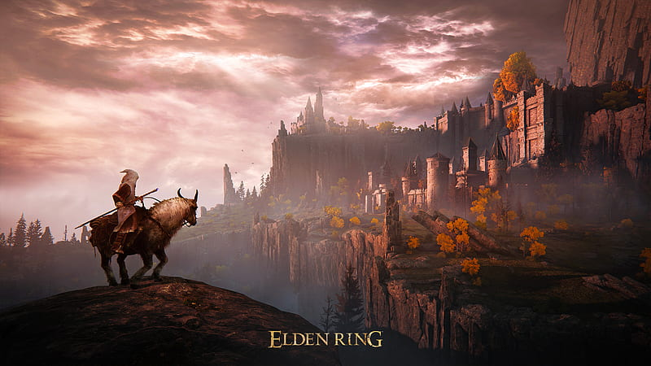

O que é Soulslike?
Mais ligado a jogos do gênero RPG e ação, soulslike é um subgênero,
assim como plataforma, hack and slash, FPS, metroidvania e MMORPG. O
nome do estilo, soulslike, pode-se traduzir para português como “tipo
o Souls”, em referência ao game pioneiro Demon's Souls.
22 de Setembro de 2009
Popularização do gênero

Dark Souls foi lançado no dia 22 de setembro de 2011, jogo esse que
marcou a empresa from software e trouxe o gênero soulslike para o
"mainstream", iniciou a construção de uma fanbase gigantesca, que
continua a crescer até hoje. E mal se podia imaginar o futuro que
estava começando a ser pavimentado graças a esse lançamento. Com o
sucesso varias empresas começaram a repetir a fórmula de Dark Souls.
Lords of the Fallen, aquele que talvez possa ser considerado o
primeiro game a seguir a receita de Dark Souls. Lords of the Fallen é
um game difícil, bem labiríntico e muito competente, mas que não
conseguiu capturar de forma exata aquilo que tornou Dark Souls o que
é.
Setembro de 2014, até os dias de hoje
Influências do Soulslike na industria dos games
Esse foi o início da “era” dos Souls-like. E graças a isso, os
jogadores e a indústria viram que dificuldade e desafio atraem
público, um público considerável que vinha de uma grande insatisfação
com a forma desrespeitosa com a qual produtoras e distribuidoras
tratavam seus consumidores.E esse novo estilo acabou se estabelecendo
como um verdadeiro gênero, mas o interessante é que ele não
influenciou somente sua “comunidade” fechada, mas muitos outros
estilos, de diferentes maneiras. Seja com inspirações no gameplay, no
sistema de mortes, na forma de contar sua história. Foi uma verdadeira
revolução. Influenciou jogos como: Lords of the Fallen, Nioh, Hollow
Knight, entre outros
19 de maio de 2023
Minha experiência com jogos desse gênero
Iniciei no mundo dos Soulslike pelo Bloodborne (lançado em : 24 de
março de 2015), foi minha primeira experiência nesse tipo de jogo, foi
desafiador, muitas vezes achava injusto, mas sempre tinhha vontade de
continuar jogando. Passou-se alguns anos e me aventurei por Dark Souls
3 e posteriormente por Elden Ring, esse, que foi o jogo do gênero que
mais me marcou, pelo mundo aberto e a sensação de recompensa por
superar os desafios na minha frente. Enfim, hoje posso dizer que esse
é meu gênero de jogo que mais gosto.